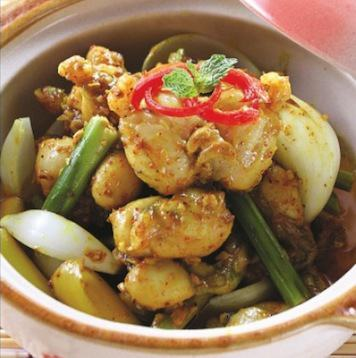

Cùng bắt tay làm thử thôi nào!
- Thịt ếch (nên chọn phần đùi ăn sẽ ngon hơn)
- Sả băm
- Hành tây, hành lá và một ít rau mùi
- Bột cà ri
- Nước cốt dừa (Nếu không có nước cốt có thể mua dừa khô về nạo cơm rồi vắt lấy nước)
- Các loại gia vị: tỏi, ớt, tiêu, đường. …
- Hành tây bóc vỏ, thái nhỏ
- Chuẩn bị một bát nhỏ, cho hỗn hợp gia vị: cà ri, đường, tỏi, tiêu, sả băm … vào trộn đều
- Ếch rửa sạch, để ráo nước rồi đem ướp với hỗn hợp trên từ 15 – 20 phút cho ngấm
- Bắt chảo lên bếp, đun sôi dầu rồi cho hành, tỏi, sả vào phi thơm
- Tiếp tục cho ếch đã ướp vào xào đến khi thấy thịt săn chắc lại, chuyển màu vàng
- Đổ nước cốt dừa vào, đảo đều tay đến khi nước sệt lại thì cho hành tây vào xào thêm 2 – 3 phút thì tắt bếp
- Cho ếch ra đĩa, rắc ít rau mùi và hành lá lên rồi bắt đầu… thưởng thức.
- Món ếch xào lăn này rất dễ ăn, vừa có thể dùng với cơm nóng, vừa ăn được với bánh mì. Đặc biệt vào những ngày mùa mưa, vị cay cay, the the của món ăn sẽ giúp bạn xua tan đi giá lạnh.
Chúc các bạn thành công với món ếch xào thật ngon này nhé !